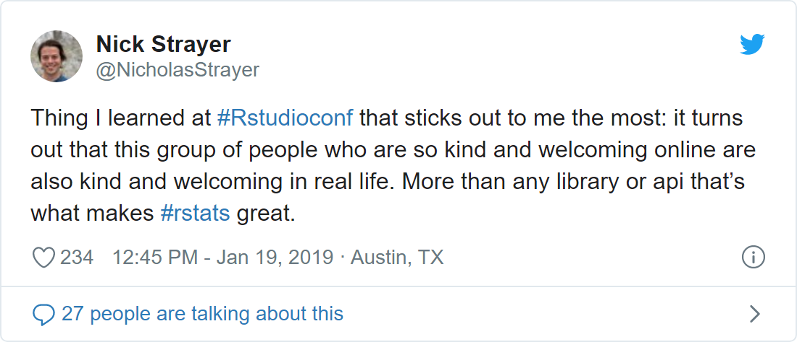

Summarizing rstudio conf 2019 Summaries
To be honest, I planned on writing a review of this past weekend’s rstudio::conf 2019, but several other people have already done a great job of doing that—just check out Karl Broman’s aggregation of reviews at the bottom of the page here! (More on this in a second.) In short, my thoughts on the whole experience are captured perfectly by Nick Strayer’s tweet the day after the conference ended.

Anyways, I figured that this was the perfect opportunity to do some text analysis. Why not extract the text from the reviews of others—linked in Karl’s repo—and make my own summary of the event? Plotting word frequencies and sentiments, while not exactly “cutting edge” compared to robust natural language processing techniques, is perfect for getting a nice, simple overview of the conference. (I have applied some of the techniques described by David Robinson and Julia Silge in their Tidy Text Mining with R book
Moreover, after reading Bob Rudis’s recent post and discovering his work-in-progress ” {curl} +{httr} + {rvest}” package called {reapr}, I realized that the work of cleaning the HTML and text for each person’s blog post would not be so bad. In fact, it turned out to be as easy as reapr::reap_url() %>% reapr::mill() (with only a little bit of extra work :smile:).
After trying a couple of different approaches (e.g. bigrams, topic modeling, etc.) and experimenting with some different visualizations, I ended up making the two plots below. (To the interested reader, I’ve included all of the code at the bottom of this post.) From the second plot—where positive sentiment heavily outweighs negative sentiment—one thing is clear: the R community is super supportive and positive, just as Nick alluded to in his tweet.